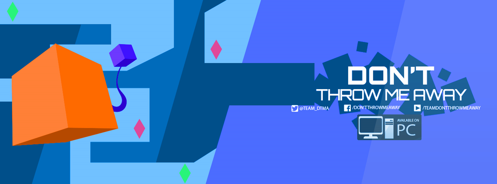

Current Project:
Don't Throw Me Away
Don’t Throw Me Away is a 2D cooperate platformer developed over the course of 6 months during my 4th year at the University of California, Santa Cruz. Our team consisted of 5 student programmers, 1 student artist, and 1 volunteer musician. Together, we designed a game from ground up and built our engine from scratch. Our process began with meetings discussing our engine design, and we decided on a Unity like structure where you we extend from base game objects and add components. We also separated core elements such as physics, audio, animations etc. into separate systems and had them interact through a messenger system.
As we were building the engine, we went over game mechanics, art, music, and level design. Our biggest goal was having our players achieving a strong cooperative flow through our levels and physics mechanics. Once our core gameplay loop was completed and our game play tested by our colleagues, we moved our focus onto making levels that demonstrate the concepts of our game and attending to areas of concern. About 4-5 months into the design process, our team went through several iterations on a progression system. A few more weeks of late nights and jam sessions, our game was ready to ship.
The day finally came, June 3rd and our game has officially shipped on Itch.io. Everyone in our class could relax for a while, but we had The Sammy Showcase the next day. The Sammy Showcase is an event held at UCSC’s new Silicon Valley Campus in Santa Clara, California where every student game from the undergraduate and master’s program could be showcased to visitors, and judged for The Sammy Awards. In my personal experience, there was no greater feeling than watching our players’ reactions to Don’t Throw Me Away. Everyone had a blast with their partner as they played through our 8 available levels. Everyone had a lot of very positive things to say as well as some valuable feedback to help improve the experience of our game. At the end of the day, we were not nominated by the judges for an award at The Sammy Awards, but our team felt like winners when everyone had a great time playing our game.
Visitors playing Don't Throw Me Away at The Sammy Showcase!
On June 12th, The Sammy Awards presentation was a day our team won’t forget. Student teams presented their games and taught the audience big lessons they learned in their 6 month experiences, and between presentations were trailers we made for our game. I was very excited for the audience to see our trailer since we filmed our own live action trailer for our 2D geometric game. Then it came down to announcing the awards for each category. The Peer’s Choice Award is somewhat of a wildcard award, and is an award chosen by students of our class by voting for their top 3 favorite games. Given we were not nominated for the other categories, we weren’t expecting anything crazy, but when Jim Whitehead announced that Don’t Throw Me Away won the Peer’s Choice Award, we were in disbelief. We quickly got together and went on stage to accept our award. Needless to say we are proud of ourselves for making a successful game.
We won the Peer Choice Award! 3 of our 7 members, Leif Myer, Myself, Dante Ruiz
5 of our 6 student team members have now graduated, but we’re definitely not done yet. We are currently discussing our game’s design and want take our game even further. We plan on cleaning up our code, reinventing the art style, tuning the physics, expanding on levels, designing a new progression system, and creating new mechanics for our players to explore. We plan to ship our game on Steam in the second quarter, 2017. If you're interested in our game, check it out on Itch.io!